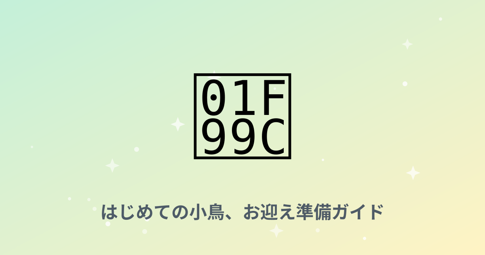
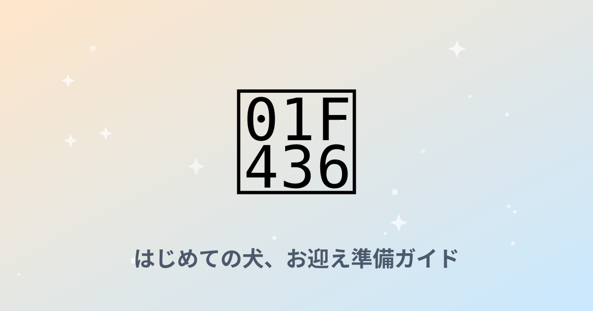

巡る、知りたいことすべてに。
テクノロジーから旅、グルメ、暮らし、健康まで。ジャンルを決めずに、日々気になったことをじっくり書き留めていくブログです。
新着記事
52件子犬を迎えて最初の1週間、本当に必要だったものだけ書く
張り切って揃えたグッズの半分は使わず、逆に「これがなかったら詰んでいた」というものがありました。
自動給餌器おすすめ4選を徹底比較【2026年版】
コスパ重視・スマホ連動・大容量・コンパクト。生活スタイル別の選び方を整理しました。
猫のトイレ砂、結局どれがいいのか比較して分かったこと
鉱物・紙・木・シリカゲル。それぞれ試して感じた、掃除のしやすさと猫の反応の違い。
猫砂 全4タイプ徹底比較｜掃除のしやすさ・コスト・消臭力
鉱物系・紙系・木系・システムトイレ用を同じ基準で採点し、比較表にまとめました。
犬用ケージ・サークル比較｜サイズ別おすすめ4選
体格・設置スペース・デザインで4タイプを比較し、サイズ別におすすめを整理しました。
共働きで留守番が多いわが家が、自動給餌器を導入した理由
「かわいそう」と思われるのが嫌で先延ばしにしていた自動化。実際に使って変わったこと。
2026年、仕事の進め方を変える生成AIツール活用術
文章作成から情報整理まで。日々の業務に生成AIをどう組み込むか、実践的な使い方をまとめました。
ペット用空気清浄機 比較｜脱臭力・静音性・電気代で選ぶ
脱臭力・静音性・設置スペース・電気代で4タイプを比較しました。
犬の留守番中の無駄吠え、遠回りせずに落ち着いた話
しつけ本の内容を全部試す前に、環境を変えるグッズから見直したら反応が変わりました。
シニア犬・シニア猫と暮らして、変えてよかった環境の話
若い頃と同じお世話のままでは負担が増えていく。年齢に合わせて見直したものを記録しました。
京都で巡る、静かな古寺と紅葉スポット案内
観光客で賑わう名所を少し離れて、静かに歴史と向き合える京都の寺院を集めました。
犬用リード・ハーネス比較｜引っ張り癖に強いのはどれ？
体格と散歩の悩み別に4タイプを比較し、選び方を整理しました。
自宅で楽しむ、本格スペシャルティコーヒーの淹れ方
豆選びから抽出まで。特別な道具がなくても、家で驚くほど美味しい一杯を淹れるためのコツ。
朝の30分を変えるだけで、一日の質が変わる理由
特別な努力をしなくても続けられる、小さな朝の習慣づくり。私が実際に試して続いているものだけを紹介します。
睡眠の質を上げるために見直したい7つの習慣
「寝ても疲れが取れない」を卒業するために。研究や専門家の知見をもとにした、無理なく続けられる工夫。
うさぎ用ケージ・トイレ用品比較｜おすすめ4選
マルカン・三晃商会・GEXなど、掃除のしやすさ・広さ・においで比較しました。
フェレット飼育グッズ比較｜初心者向けおすすめ4選
スターターセットから多頭飼い向けケージまで比較しました。
ハリネズミ飼育グッズ比較｜ケージ・保温器具のおすすめ4選
温度管理が命に関わるハリネズミ飼育。観察のしやすさや保温性で比較しました。
ペット防災・同行避難グッズ比較｜おすすめ4選
持ち運びやすさ・備蓄期間・導入コストで比較しました。
犬の車酔い対策グッズ比較｜ドライブが楽になるおすすめ4選
ドライブボックスからサプリメントまで、効果の出方で比較しました。
猫の脱走防止ネット・ドアガード比較｜設置場所別おすすめ4選
玄関・網戸・つっぱり棒タイプなど、設置場所別に比較しました。
シニア犬・シニア猫用おむつ比較｜介護のしやすさで選ぶおすすめ4選
装着のしやすさ・漏れにくさ・交換のしやすさで比較しました。
ペットの熱中症対策グッズ比較｜夏を乗り切るおすすめ4選
冷却効果・持続時間・使いやすさでシーン別に比較しました。

【正直レビュー観点】猫用自動トイレってどうなの？人気3機種＋定番を比較🐱
PETKIT・CATLINK・ペットセーフの自動トイレを比較。掃除ストレスから解放されたい飼い主さん向け…

ハムスターの飼育グッズ、最初に買うべきはコレ🐹✨ 静音重視の4選
三晃商会サイレントホイールやルーミィなど、夜中のカラカラ音に悩まされないハムスター飼育グッズを厳選しまし…

セキセイインコのケージ選び、HOEIが定番って本当？🦜 サイズ別おすすめ4選
手乗りインコの定番HOEI 35手のりから465インコまで、鳥かご選びの基準とお世話グッズをまとめました…

アクアリウム、何から買えばいい？🐠 初心者セットの正解4つを解説✨
水作エイトコアやテトラミンなど、熱帯魚・金魚飼育を始める人がまず揃えるべき定番アイテムを紹介します。…

レオパ（ヒョウモントカゲモドキ）飼育セット🦎 これだけ揃えればOKな4選
レプタイルボックス・暖突・ウェットシェルターなど、レオパ飼育の定番装備を初心者向けにまとめました。…

犬の歯磨き、続かない人へ🦷 ハードル低い順に試すデンタルケア4選🐶
PETKISS歯みがきシートからグリニーズまで、嫌がる犬でも続けやすい順にデンタルケアグッズを並べました…

猫の爪とぎで家がボロボロ…😇 壁と家具を守る神アイテム4選🐾
猫壱バリバリベッド、ガリガリサークルなど、猫が気に入る爪とぎと壁の保護グッズをセットで紹介します。…

うさぎの牧草、食べてくれない問題🌾 チモシー選びの正解4つ🐰
バニーセレクション・パスチャーチモシーなど、うさぎの主食となる牧草とフード選びのコツをまとめました。…

カメ飼育の基本セット🐢 水換えがラクになる定番グッズ4選✨
テトラ レプトミン、GEXカメ元気フィルターなど、ミドリガメ・クサガメ飼育の定番アイテムを紹介します。…

デグー・チンチラの飼育グッズ🐭 砂浴び＆回し車の定番4選✨
イージーホーム、メタルサイレント、ひかりデグデグなど、デグー・チンチラ飼育の定番アイテムをまとめました。…

犬用バギー・ペットカート🐕 お出かけがもっと楽しくなるおすすめ4選✨
AIRBUGGYからコンパクトタイプまで、シニア犬や暑い時期のお出かけに便利なペットカートを比較しました…

子猫の哺乳・ミルク育児グッズ🍼 保護したその日から使えるおすすめ4選
ロイヤルカナン ベビーキャットや森乳サンワールドのワンラックなど、子猫の人工哺育で定番のミルク・哺乳瓶を…
猫の抜け毛対策ブラシ比較🧹 換毛期を乗り切るおすすめ4選✨
ファーミネーターやフーリーなど、猫の抜け毛・毛玉対策の定番ブラシをタイプ別に比較しました。…

カメを迎える前に🐢 準備すること完全ガイド【保存版】
必要な準備・費用の目安・紫外線ライトの重要性・お迎え初日の過ごし方をわかりやすくまとめまし…

レオパ(ヒョウモントカゲモドキ)を迎える前に🦎 準備すること完全ガイド
必要な準備・費用の目安・温度管理・お迎え初日の過ごし方をわかりやすくまとめました…

インコ・小鳥を迎える前に🦜 準備すること完全ガイド【保存版】
必要な準備・費用の目安・放鳥時の安全対策・お迎え初日の過ごし方をわかりやすくまとめまし…

ハリネズミを迎える前に🦔 準備すること完全ガイド【保存版】
必要な準備・費用の目安・温度管理・お迎え初日の過ごし方をわかりやすくまとめました…

フェレットを迎える前に🦡 準備すること完全ガイド【保存版】
必要な準備・費用の目安・脱走対策・お迎え初日の過ごし方をわかりやすくまとめました…

シニア犬・シニア猫との暮らし方ガイド🐾 老化のサインと備え完全版
老化のサイン・生活環境の見直し・備えておきたいグッズをわかりやすくまとめました…

うさぎを迎える前に🐰 準備すること完全ガイド【保存版】
必要な準備・費用の目安・部屋の安全対策・お迎え初日の過ごし方をわかりやすくまとめまし…

熱帯魚・アクアリウムを始める前に🐠 知っておきたいこと完全ガイド
必要な機材・水槽の立ち上げ方・費用の目安をわかりやすくまとめました…

初めてハムスターを迎える前に🐹 準備すること完全ガイド【保存版】
必要な準備・費用の目安・ケージの置き場所・お迎え初日の過ごし方をわかりやすくまとめまし…

初めて犬を迎える前に🐶 準備すること完全ガイド【保存版】
必要な準備・費用の目安・部屋の安全対策・初日の過ごし方を、順番にわかりやすくまとめまし…

初めて猫を迎える前に🐱 準備すること完全ガイド【保存版】
必要な準備・費用の目安・部屋の安全対策・初日の過ごし方を、順番にわかりやすくまとめまし…

猫の爪切り・お手入れグッズ比較✂️ 暴れる子でも安心なおすすめ4選
ペティオ プレチャンスや貝印など、猫の爪切りを深爪防止・使いやすさで比較しました。…

ペット見守りカメラ比較📷 留守番中の「見えない不安」を消すおすすめ4選
Furbo・Anker Eufy・TP-Link Tapoなど、ペット見守りカメラをおやつ機能・画質・価…

ベタ（熱帯魚）飼育スターターセット🐟 初めてでも失敗しにくいおすすめ4選
GEXのベタ専用グッズなど、小さな容器でも飼いやすいベタの飼育セットを比較しました。…

カブトムシ・クワガタ飼育セット🪲 夏を楽しむ初心者向けおすすめ4選
マルカン・フジコンなど、カブトムシ・クワガタの飼育に必要なマットやケースの定番セットを紹介します。…

メダカ・ビオトープ入門セット🌸 ベランダで楽しむおすすめ4選
GEXのメダカ元気シリーズなど、屋外でメダカを飼うビオトープ入門グッズを比較しました。…
該当する記事が見つかりませんでした。検索条件を変えてお試しください。